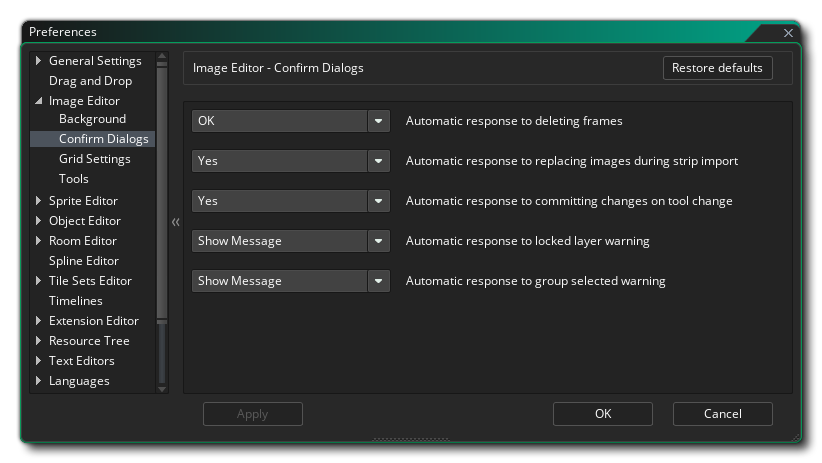
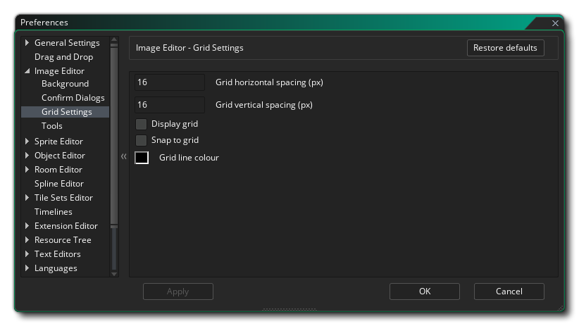

Mit den Bild-Editor-Einstellungen legen Sie fest, wie das Sprite- und das Bild-Editor- Fenster aussehen und sich anfühlen. Die folgenden sind die allgemeinen Optionen:
Die Bild-Editor-Einstellungen haben außerdem folgende Unterkategorien:
- Standard-Loop-Modus: Die Loop-Schaltfläche im Bildeditor kann so eingestellt werden, dass sie in zwei verschiedenen Modi funktioniert: entweder einmal abspielen, wobei die Animation beim letzten Frame stoppt, Schleife von Anfang an, wo die Animation zurück geht das erste Bild, wenn es fertig ist, oder Ping Pong, wo die Animation durch die Bilder bis zum Ende geht und dann wieder durch sie zum Anfang zurückgeht. Der Standardwert ist hier "loop".
- Draw thin selection outline: Wenn diese Option aktiviert ist, wird der Umriss für die Auswahl eine absolute Breite von 1 Pixel haben, unabhängig von der Skalierung des Bildes, während die Auswahl deaktiviert ist, wird die Auswahl um 1px breiter und skaliert mit Bild. Standardmäßig ist diese Option aktiviert.
- Primäre Grundfarbe der Auswahl: Die Umrisslinie ist eine gestrichelte Linie, die zwischen zwei Farben wechselt. Mit dieser Option können Sie die erste Farbe festlegen, die verwendet werden soll (einschließlich Alpha), und einen Standardwert von #FFFFFD0.
- Sekundärfarbe des Selektions-Umrisses: Der Umriss des Umrisses ist eine gestrichelte Linie, die zwischen zwei Farben wechselt. Mit dieser Option können Sie die zweite Farbe festlegen, die verwendet werden soll (einschließlich Alpha), und einen Standardwert von #0000D0.
- Editor-Hintergrundfarbe: Während der Bearbeitung eines Sprite-Rahmens kann das Bild skaliert werden oder nicht in die gesamte Zeichnung im Fenster passen. In diesem Fall wird eine Hintergrundfarbe angezeigt, die Sie hier einstellen können. Der Standardwert ist #282828FF.
Hier können Sie die Optionen für den Hintergrund festlegen, mit dem Sie Ihre Sprite-Bilder bearbeiten. Standardmäßig ist dies ein Gitter aus grauen Quadraten, aber Sie können die folgenden Einstellungen verwenden, um es zu ändern:
- Leinwandstil - Hier legen Sie den "Stil" für den Hintergrund fest, der entweder " Blockmuster " oder " Einfarbig " sein kann. Eine einzelne Farbe stellt den Hintergrund einfach auf die Farbe Ihrer Wahl ein (unter Verwendung der Einstellung " Farbe 1", wie unten beschrieben), während das Blockmuster die Standardeinstellung ist (die auch mit den übrigen unten gezeigten Dialogoptionen bearbeitet werden kann). Standard ist "Blockmuster".
- Canvas-Blockgröße - Wenn Sie Blockmuster für den Hintergrund ausgewählt haben, können Sie hier die Größe des einzelnen Blocks festlegen. Der Standardwert ist 16px, wobei ein Mindestwert von 2px und maximal 256px zulässig ist.
- Hauptfarbe des Canvas - Wenn für den Hintergrund die Option "Einzelne Farbe" gewählt wurde, wird diese Farbe verwendet. Sie können auf das Farbfeld klicken, um den Farbeditor zu öffnen und zu ändern. Wenn Sie die Option Blockmuster verwenden, wird die erste Farbe für alternative Blöcke festgelegt. Standardfarbe ist (rgba) # c3c3c3ff.
- Canvas-Sekundärfarbe (Blockmuster-Stil) - Wenn Sie für den Hintergrund Blockmuster ausgewählt haben, ist die Farbe, die für die Alternative zu Farbe 1 (oben) verwendet wird, die Farbe. Sie können auf das Farbfeld klicken, um den Farbeditor zu öffnen und zu ändern. Standardfarbe ist (rgba) # 808080ff.
Hier können Sie das Verhalten der Bestätigungsdialoge auswählen, wenn Sie verschiedene Aktionen für das aktuelle Sprite durchführen. Sie sind:
- Automatische Reaktion auf das Löschen von Frames - Wenn Sie einen Frame standardmäßig löschen, wird eine Meldung angezeigt, in der Sie gefragt werden, ob Sie dies wirklich tun möchten. Wenn Sie diese Option auf "OK" setzen, können Sie diese Nachricht entfernen und das Löschen von Frames zulassen, ohne dass weitere Nachrichten angezeigt werden. Standard ist "Nachricht anzeigen".
- Automatische Reaktion auf Bilder während der Streifen Import ersetzen - Bei Auswahl von Import - Streifen aus dem Bild in Drop - Down - Menü, werden Sie eine Nachricht erhalten Sie warnen, dass Sie alle Bilder, die bereits in der Sprite - Ressource wird überschrieben wird, mit der Option, um fortzufahren oder nicht. Sie können hier einstellen, ob diese Nachricht angezeigt werden soll, oder die IDE einfach die Option "Ja" oder "Nein" wählen lassen. Der Standardwert ist "Nachricht anzeigen".
- Automatische Reaktion auf festgeschriebene Änderungen beim Werkzeugwechsel - Wenn Sie Zeichenwerkzeuge nach der Bearbeitung eines Rahmens ändern, wird standardmäßig eine Meldung angezeigt, in der Sie gefragt werden, ob Sie die vorgenommenen Änderungen übernehmen möchten. Wenn Sie diese Option auf "OK" setzen, können Sie diese Nachricht entfernen und zulassen, dass die Frame-Edition festgeschrieben wird, ohne dass weitere Nachrichten angezeigt werden, wenn Sie die Tools ändern. Wenn Sie "Nein" wählen, wird die Frame-Edition beim Ändern der Tools stillgelegt. Standard ist "Nachricht anzeigen".
- Automatische Antwort auf die Warnung zu gesperrten Ebenen - Wenn Sie versuchen, eine gesperrte Ebene zu bearbeiten, erhalten Sie standardmäßig eine Meldung, die Sie darüber informiert, dass Sie dies nicht tun können. Wenn Sie diese Option auf "OK" setzen, wird keine Nachricht angezeigt und die Ausgabe wird automatisch fehlschlagen.
- Automatische Antwort auf die Warnung der Gruppe - Wenn Sie im Ebenen-Editor mehrere Ebenen auswählen und dann versuchen, zu zeichnen oder zu bearbeiten, wird Ihnen standardmäßig eine Meldung angezeigt, die Sie darüber informiert, dass dies nicht möglich ist. Sie können hier "OK" auswählen, um diese Nachricht zu entfernen und die Bilder im Hintergrund nicht bearbeiten, bis nur eine einzelne Ebene ausgewählt ist. Standard ist "Nachricht anzeigen".
In den Voreinstellungen für Rastereinstellungen wird festgelegt, wie das Rasterbild dargestellt wird, wobei folgende Optionen verfügbar sind:
- Horizontaler Rasterabstand (px) - Dieser Wert legt den Abstand für die horizontalen Linien des Rasterbildes fest. Der Standardwert ist 1px.
- Raster vertikaler Abstand (px) - Dieser Wert legt den Abstand für die vertikalen Linien des Rasterbildes fest. Der Standardwert ist 1px.
- Display Grid - Wenn diese Option aktiviert ist, wird der Image Editor mit dem Bildraster geöffnet. Standard ist deaktiviert.
- An Gitter ausrichten - Wenn diese Option aktiviert ist, werden bestimmte Werkzeuge automatisch vom Bild-Editor in das Bildgitter eingerastet. Standard ist deaktiviert.
- Rasterlinienfarbe - Hier können Sie die Farbe (einschließlich Alpha-Wert) für das Raster festlegen. Standard ist #000000FF.
Hier können Sie die verschiedenen Optionen für die Funktionsweise einiger der Zeichenwerkzeuge einstellen.
Wenn Sie das Arc Tool verwenden Hier können Sie die verschiedenen Farben festlegen, die zum Zeichnen der Knoteneigenschaften verwendet werden:
- Ankerpunktfarbe - Legen Sie die Farbe für die verschiedenen Ankerpunkte auf dem Spline / Bogen fest. Standard ist (rgba) #FF0000FF.
- Kontrollpunktfarbe - Legen Sie die Farbe für jeden Kontrollpunkt "Griffe" an einem Ankerpunkt fest. Standard ist (rgba) #FF0000FF.
- Tangentenlinienfarbe - Legen Sie die Farbe für die Linien fest, die die Kontrollpunkte mit den Ankern verbinden. Standard ist (rgba) #00FFFFFF.
- Ausgewählte Punktfarbe - Legen Sie die Farbe fest, die für ausgewählte Ankerpunkte auf dem Spline / Bogen verwendet werden soll. Standard ist (rgba) #00FF00FF.
- Punktgröße - Legen Sie die Größe der verschiedenen zu verwendenden Ankerpunkte und Kontrollpunkte fest. Standard ist 10px.